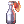

Talk:Zeny Guide and Farming 101
While anyone will be allowed to update this page, keep in mind I Lu7ky Will ultimately moderate this and keep an eye on it for spelling etc.
Discuss anything here you are not sure of before posting!
Editors and Contributors
Lu7ky + Mag|Lightning from Steam (Helps me with Grammar and spell checks and other ideas).
References
Example Table
| Ingredient | How to Obtain | Output |
|---|---|---|
| Grasshopper's leg (5) | Drop | STR Dish (Fried Grashopper Legs) |
| Old Frying Pan | Drop | STR Dish (Fried Grashopper Legs) |
| Cooking Oil | NPC Sold 500->380 | STR Dish (Fried Grashopper Legs) |
| Grape (3) | Drop | INT Dish (Grape Juice Herbal Tea) |
| Red Potion (2) | NPC Sold 10->7 | INT Dish (Grape Juice Herbal Tea) |
| Green Herb | Drop | VIT Dish (Steamed Crab Nippers) |
| Nipper (10) | Drop | VIT Dish (Steamed Crab Nippers) |
| Yellow Potion | NPC Sold 180->136 | VIT Dish (Steamed Crab Nippers) |
| Spawn (10) | Drop | AGI Dish (Frog Egg Squid Ink Soup) |
| Squid Ink | Drop | AGI Dish (Frog Egg Squid Ink Soup) |
| Bag of Grain | NPC Sold 200->152 | AGI Dish (Frog Egg Squid Ink Soup) |
| Grape (2) | Drop | DEX Dish (Honey Grape Juice) |
| Honey | Drop | DEX Dish (Honey Grape Juice) |
| Red Potion | NPC Sold 10->7 | DEX Dish (Honey Grape Juice) |
| Yoyo Tail (5) | Drop | STR Dish (Fried Monkey Tails) |
| Old Frying Pan | Drop | STR Dish (Fried Monkey Tails) |
| Cooking Oil | NPC Sold 500->380 | STR Dish (Fried Monkey Tails) |
Item Listing
Regular listing  Bottle Grenade
Item Listing to Market
 Bottle Grenade (added #2 to end of List)
Bottle Grenade (added #2 to end of List)
Discussion
I think for regular cooking, level 10 cookbook is the only one that should be included (even then im not sure how profitable this can be). I don't think anyone would settle for less when looking for stat foods in the market anyway, especially since everyone can also get +6 foods easily in sara's memories. --DualityDiscretion (talk) 08:22, 18 June 2018 (UTC)
Added
Need Sara's Memories
Arch Bishop Phillip: Need @alootid lists (in game discussion)